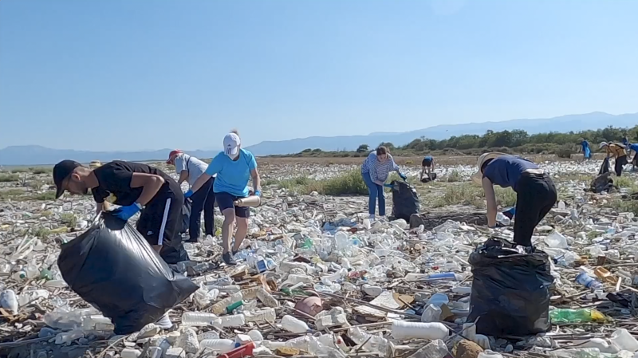

Local News & Community Activity
This page combines real ideas with simulated examples to show how local actions can support SDG 6 targets. Each update highlights practical activities that could take place in a community.
Volunteers Complete River Clean Up
A group of fifteen volunteers met at the local stream last weekend to remove rubbish from the riverbank. Within a few hours, they filled more than ten large bags with plastic bottles, cans and other waste. Clean-up events like this keep the water cleaner and improve the area for both wildlife and local residents.
Well Water Quality - November Check
Recent tests were carried out on three community wells. Two wells stayed within safe levels for non-drinking uses such as washing and gardening. One well showed slightly cloudy water, so it has been marked for further cleaning and follow-up testing. Regular checks like these help identify issues early and reduce health risks.
Upcoming: Water Conservation Workshop
A free workshop is planned for Monday 15th December at the community hall. Topics will include simple ways to save water at home, how to spot hidden leaks and basic ideas for re-using greywater safely. People interested in attending can sign up using the contact form and will receive a reminder message before the event.